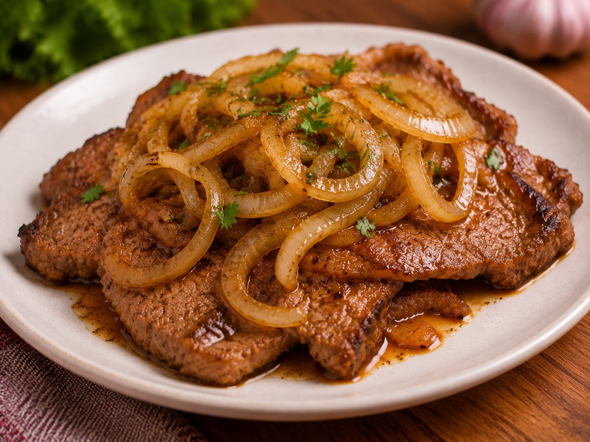
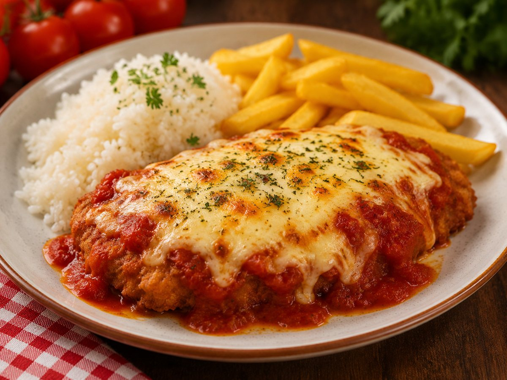
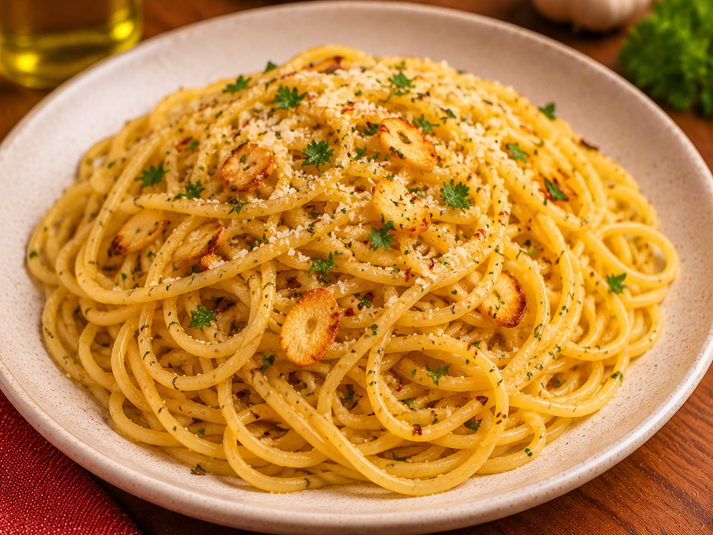
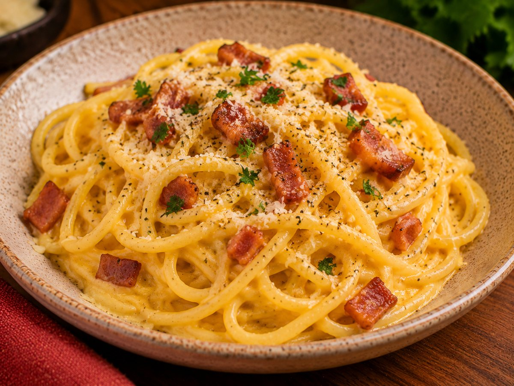

Todas as receitas
21 receitas caseiras, em ordem alfabética. Escolha uma categoria para filtrar.
-
Arroz
O arroz branco soltinho de todo dia, com cebola dourada no óleo para dar sabor.
⏱ 30 min FácilVer receita → -
Batata rústica na air fryer
Batatas com casca, crocantes por fora e macias por dentro, sem fritura em imersão.
⏱ 35 min FácilVer receita → -

Bife acebolado
Bife macio e suculento coberto com cebola refogada até ficar doce e brilhante.
⏱ 25 min FácilVer receita → -

Bife à parmegiana
Bife empanado e frito, coberto com molho de tomate e queijo gratinado.
⏱ 50 min MédioVer receita → -
Bobó de frango
Creme de mandioca com frango desfiado, leite de coco e temperos, de origem baiana.
⏱ 1 h MédioVer receita → -

Bolo de cenoura
Bolo fofinho batido no liquidificador, com cobertura de chocolate.
⏱ 55 min FácilVer receita → -

Bolo de chocolate
Bolo de chocolate macio e úmido, perfeito para o café da tarde.
⏱ 55 min FácilVer receita → -

Brigadeiro
O doce brasileiro mais querido, feito com apenas três ingredientes.
⏱ 20 min FácilVer receita → -

Escondidinho de carne
Purê de mandioca ou batata sobre recheio de carne moída, gratinado com queijo.
⏱ 1 h MédioVer receita → -
Filé de peixe empanado
Filés de peixe com casquinha dourada e crocante, bem fáceis de fazer.
⏱ 30 min FácilVer receita → -
Frango com batata
Pedaços de frango dourados com batatas macias, cozidos juntos na mesma panela.
⏱ 50 min FácilVer receita → -
Hambúrguer do Brito
Meu hambúrguer: pão brioche, hambúrguer da mamãe, barbecue, mussarela, bacon e ovo com orégano.
⏱ 25 min FácilVer receita → -

Lasanha
Camadas de massa, molho de carne, presunto e queijo, gratinadas no forno.
⏱ 1 h 15 min MédioVer receita → -
Limonada
Limonada gelada e refrescante, feita no liquidificador com limão, água e açúcar.
⏱ 10 min FácilVer receita → -

Macarrão ao alho e óleo
Prato simples e rápido, com alho dourado no azeite e um toque de pimenta.
⏱ 20 min FácilVer receita → -

Macarrão à bolonhesa
Espaguete com molho de carne moída e tomate, cozido devagar para ganhar sabor.
⏱ 45 min FácilVer receita → -

Macarrão à carbonara
Espaguete cremoso com ovos, queijo e bacon crocante, sem creme de leite.
⏱ 25 min MédioVer receita → -

Nhoque de batata
Massinhas macias de batata, cozidas na água e servidas com molho de tomate.
⏱ 1 h MédioVer receita → -

Panqueca de carne moída
Massa fina e macia recheada com carne moída e coberta com molho de tomate e queijo.
⏱ 1 h MédioVer receita → -
Strogonoff de carne
Clássico cremoso de carne em tiras com molho de tomate e creme de leite.
⏱ 40 min FácilVer receita → -
Yakisoba
Macarrão oriental salteado com carne e legumes coloridos, temperado com shoyu.
⏱ 40 min MédioVer receita →